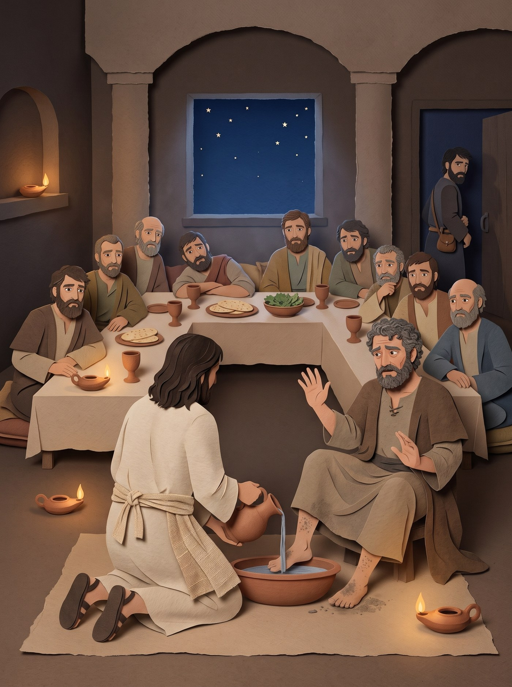
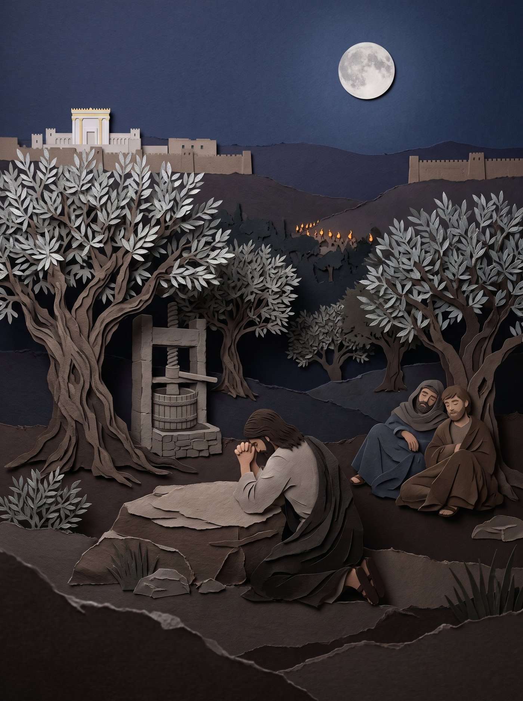
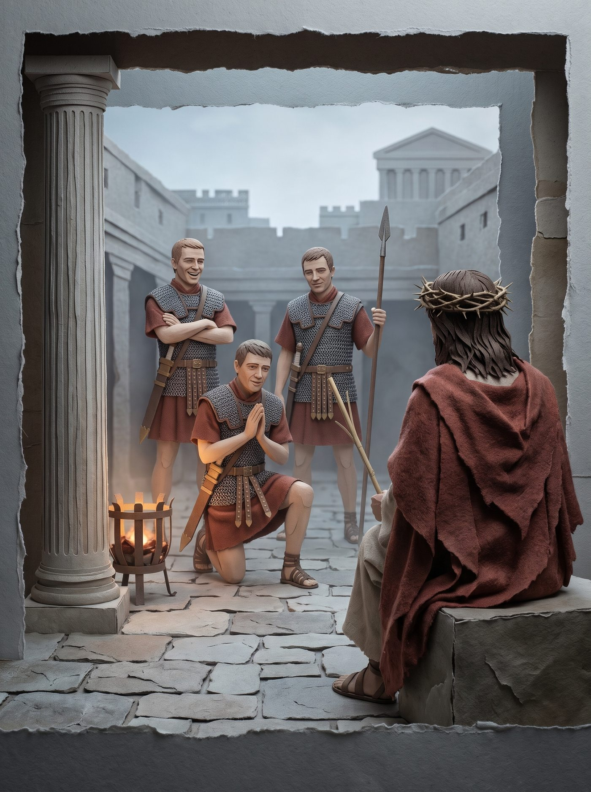

Capítulo 10
La última Pascua
Parte II: el cumplimiento · Mateo 26–27; Marcos 14–15; Lucas 22–23; Juan 13–19
La escena
Recreación: así pudo haber sido. Los hechos están en los cuatro evangelios. Lo que pensaban y sentían se imagina a partir del texto y de lo que se sabe de la época.
Una ciudad llena
Es primavera en Jerusalén. Y la ciudad, que en un día normal tiene unas decenas de miles de habitantes, está desbordada. Para la Pascua llegan peregrinos de todas partes: de Galilea, de Egipto, de Babilonia, de Roma. Duermen en las casas, en los patios, en carpas sobre los cerros de alrededor. Por todas partes se oye el balido de los corderos que la gente trae para el sacrificio.
Y sobre la ciudad, en lo alto, el templo. Blanco y dorado, brillando al sol. Construido sobre el monte Moriah, el mismo monte al que, casi dos mil años antes, subió un anciano llamado Abraham con su hijo, la leña y un cuchillo. El monte donde Abraham dijo: «Dios se proveerá de cordero para el holocausto, hijo mío» (Gn 22:8).
Unos días antes, Jesús entró a la ciudad montado en un burrito, y la gente tendió sus mantos en el camino y gritó «Hosanna». Y toda Jerusalén se hizo la misma pregunta que se venía haciendo desde Galilea:
«¿Quién es este?» (Mt 21:10).
Esta semana se va a contestar.
La cena
Es jueves en la noche. Jesús y los doce están en un cuarto en el piso de arriba de una casa, recostados alrededor de una mesa baja. Pan sin levadura. Hierbas amargas. Vino. El cordero de la Pascua. Todo lo que se comía desde la noche de Egipto, la noche de la sangre en las puertas.
Y Jesús les dice algo que no entienden del todo:
«¡Cuánto he deseado comer con vosotros esta pascua antes que padezca!» (Lc 22:15).
Juan, que estaba ahí, lo resume así: Jesús amó a los suyos hasta el fin.
Y entonces Jesús hace algo que deja a todos helados. Se levanta de la mesa. Se quita el manto. Se amarra una toalla a la cintura. Echa agua en un recipiente. Y se arrodilla delante de los pies de sus discípulos.
Lavar los pies era el trabajo del último esclavo de la casa. Pies llenos del polvo de los caminos, del barro de las calles, de lo que pisaban los animales. Ningún maestro hacía eso. Ningún judío libre debía hacerlo.
Jesús va de uno en uno. Lava los pies de Juan. Los de Tomás. Los de Judas, que ya había vendido a su maestro por treinta piezas de plata (Mt 26:15), y Jesús lo sabía. Le lava los pies igual.
Cuando llega a Pedro, Pedro recoge las piernas: «No me lavarás los pies jamás». Y Jesús le contesta: «Si no te lavare, no tendrás parte conmigo» (Jn 13:8).
Después se sienta otra vez y les dice: «Pues si yo, el Señor y el Maestro, he lavado vuestros pies, vosotros también debéis lavaros los pies los unos a los otros» (Jn 13:14).

Y en medio de la cena, toma el pan. Da gracias. Lo parte. «Tomad, comed; esto es mi cuerpo» (Mt 26:26). Y después toma la copa de vino y dice las palabras que unen todo el libro, todo lo que venimos contando desde el jardín:
«porque esto es mi sangre del nuevo pacto, que por muchos es derramada para remisión de los pecados» (Mt 26:28).
El nuevo pacto. El que había anunciado Jeremías en Babilonia, el del capítulo 7: «perdonaré la maldad de ellos». Remisión de los pecados. Perdón. Lo que en Capernaum Jesús le regaló a un paralítico con una palabra, ahora dice cuánto va a costar.
Judas se levanta y sale. Juan anota un detalle de tres palabras: «era de noche».
Getsemaní
Después de cantar los salmos de la Pascua, salen de la ciudad. Cruzan el torrente de Cedrón, en el valle, y suben un poco por el monte de los Olivos hasta un huerto que se llama Getsemaní. El nombre quiere decir «prensa de aceite»: ahí se exprimían las aceitunas.
Es noche de luna llena. La Pascua siempre cae en luna llena. Desde el huerto se ven, al otro lado del valle, las murallas de la ciudad y el templo, iluminados.
Jesús deja a la mayoría en la entrada y se lleva más adentro a Pedro, a Jacobo y a Juan. Y ahí les dice algo que nunca les había dicho:
«Mi alma está muy triste, hasta la muerte; quedaos aquí, y velad conmigo» (Mt 26:38).
Se aleja un poco, como a un tiro de piedra. Cae de rodillas. Después, con la cara contra la tierra. Y ora:
«Abba, Padre, todas las cosas son posibles para ti; aparta de mí esta copa; mas no lo que yo quiero, sino lo que tú» (Mc 14:36).
Abba. Así le decían los niños a su papá. Papá.
Su lucha. Aquí está la lucha más grande de todo este libro. No es la de Jacob con el ángel, ni la de David en el suelo, ni la de Daniel frente a los leones. Es la de Jesús en un huerto de olivos, de noche, solo. Él sabía lo que venía. Lo había anunciado. Sabía de los azotes, de los clavos, de la burla. Y sabía algo más pesado que todo eso: que iba a cargar el pecado de todos, y que por primera vez en la eternidad se iba a sentir lejos de su Padre. Y su cuerpo, su cuerpo humano, de carne como el nuestro, se resistía. Lucas, que era médico, es el único que lo cuenta así: «Y estando en agonía, oraba más intensamente; y era su sudor como grandes gotas de sangre que caían hasta la tierra» (Lc 22:44). Tres veces pidió que, si había otro camino, pasara de Él esa copa. Tres veces volvió donde estaban sus amigos y los encontró dormidos. Nadie lo acompañó. Y tres veces terminó igual: no lo que yo quiero, sino lo que tú. Jesús no fue a la cruz porque no le dolía. Fue a pesar de que le dolía. Fue por amor.

Y entonces se ven antorchas entre los olivos. Ruido de armas. Viene una multitud con espadas y palos, enviados por los sacerdotes, y al frente viene Judas. Judas se acerca y lo saluda con un beso. Esa era la señal.
Pedro saca una espada y le corta la oreja a un siervo del sumo sacerdote. Y Jesús lo detiene. Le sana la oreja al hombre. Y le dice a Pedro:
«¿Acaso piensas que no puedo ahora orar a mi Padre, y que él no me daría más de doce legiones de ángeles?» (Mt 26:53).
Más de doce legiones: decenas de miles de ángeles. Y no los llamó.
Y entonces pasa lo que Él les había dicho que iba a pasar:
«Entonces todos los discípulos, dejándole, huyeron» (Mc 14:50).
La noche de los golpes
Lo llevan atado a la casa de Anás, el ex sumo sacerdote, suegro de Caifás. Anás lo interroga sobre sus discípulos y su enseñanza. Jesús le contesta que siempre habló en público, en el templo y en las sinagogas, que pregunte a los que lo oyeron.
Y uno de los guardias le da una bofetada:
«¿Así respondes al sumo sacerdote?» (Jn 18:22).
La primera. Con la mano abierta, en la cara. Y Jesús, sin gritar, le contesta que si dijo algo malo, que lo pruebe; y si no, por qué le pega.
De ahí lo mandan, todavía atado, a la casa de Caifás, el sumo sacerdote. Es de madrugada. Traen testigos falsos que no se ponen de acuerdo entre ellos. Y Jesús calla. Todo el rato, calla. Hasta que Caifás se levanta y le exige, bajo juramento, que diga si es el Cristo, el Hijo de Dios. Y Jesús rompe el silencio con las palabras de Daniel:
«Tú lo has dicho; y además os digo, que desde ahora veréis al Hijo del Hombre sentado a la diestra del poder de Dios, y viniendo en las nubes del cielo» (Mt 26:64).
Caifás se rasga la ropa. Blasfemia, grita. Es reo de muerte, contestan todos.
Y lo que viene después es la parte que más cuesta leer:
«Y algunos comenzaron a escupirle, y a cubrirle el rostro y a darle de puñetazos, y a decirle: Profetiza. Y los alguaciles le daban de bofetadas» (Mc 14:65).
Le tapan los ojos con un trapo. Le pegan. Y se ríen: a ver, profeta, adivina quién te pegó. Al que calmó la tormenta. Al que conocía el nombre de cada uno de los que le estaban pegando.
Abajo, en el patio, junto a un fuego de brasas, Pedro, el que dijo que daría la vida por Él, niega tres veces que lo conoce. Canta el gallo. Y Pedro sale a llorar en la oscuridad. Esa historia la terminamos en el capítulo 11.
Pilato
Al amanecer lo llevan ante el gobernador romano, Poncio Pilato. Los sacerdotes no podían ejecutar a nadie; solo Roma podía. Y ante Roma no lo acusan de blasfemia, porque a Roma eso no le importaba. Lo acusan de hacerse rey. De rebelde contra el César.
Pilato lo interroga a solas. ¿Eres tú el rey de los judíos? Y Jesús le habla de un reino que no es de este mundo, y de la verdad. Y Pilato, cínico, cansado, le pregunta: «¿Qué es la verdad?». Y sale a decir a la gente: «Yo no hallo en él ningún delito» (Jn 18:38).
Pero la multitud que los sacerdotes han reunido grita. Pilato intenta una salida: cada Pascua soltaba a un preso. Les ofrece a Jesús o a Barrabás, un rebelde y asesino. Y la multitud elige a Barrabás.
«Pilato les dijo: ¿Qué, pues, haré de Jesús, llamado el Cristo? Todos le dijeron: ¡Sea crucificado!» (Mt 27:22).
Entonces Pilato manda azotarlo. «Así que, entonces tomó Pilato a Jesús, y le azotó» (Jn 19:1). Una frase. Juan no da detalles, porque sus lectores sabían de sobra lo que era un azote romano. Nosotros no, y por eso está el recuadro de más abajo.
Después de los azotes, los soldados, que tenían su cuartel en la ciudad y estaban aburridos y llenos de desprecio por los judíos, deciden divertirse con el que dicen que es rey.
«Y los soldados entretejieron una corona de espinas, y la pusieron sobre su cabeza, y le vistieron con un manto de púrpura; y le decían: ¡Salve, Rey de los judíos! y le daban de bofetadas» (Jn 19:2-3).
Una corona de espinas, apretada sobre la cabeza. Un manto viejo de soldado, color rojo, como si fuera la púrpura de los reyes. Una caña en la mano, como cetro. Y después le quitan la caña y le pegan con ella en la cabeza, sobre las espinas. Se arrodillan delante de Él, burlándose. Le escupen (Mt 27:29-30).

Pilato lo saca afuera así, ensangrentado, con la corona y el manto, delante de todos. Quizás esperaba que les diera lástima. Y dice:
«¡He aquí el hombre!» (Jn 19:5).
Y la gente grita más fuerte: crucifícale. Y los principales sacerdotes del templo de Dios dicen una frase terrible: que no tienen más rey que el César.
Pilato se lava las manos. Y lo entrega.
La cruz
Le ponen sobre los hombros el madero, y sale de la ciudad, cargando su cruz, hacia un lugar que llaman la Calavera; en hebreo, Gólgota. A medio camino ya no puede más, y los soldados obligan a un hombre que venía del campo, Simón de Cirene, a cargarla detrás de Él.
Es alrededor de las nueve de la mañana. Lo acuestan sobre el madero. Le clavan las manos. Lo levantan. Le clavan los pies. Y con Él, uno a cada lado, crucifican a dos ladrones.
Y la primera frase que dice desde la cruz no es una queja. No es una maldición. Es esta:
«Padre, perdónalos, porque no saben lo que hacen» (Lc 23:34).
Mientras lo dice, a sus pies, los soldados se reparten su ropa y echan suertes sobre su túnica.
Arriba de su cabeza, Pilato manda clavar un letrero en tres idiomas, hebreo, griego y latín: Jesús nazareno, rey de los judíos.
Y abajo empiezan las burlas. Los que pasan por el camino menean la cabeza. Los sacerdotes y los escribas, satisfechos, dicen entre ellos que salvó a otros y a sí mismo no se puede salvar. Y uno de ellos, sin darse cuenta, recita casi palabra por palabra un salmo escrito mil años antes:
«Confió en Dios; líbrele ahora si le quiere; porque ha dicho: Soy Hijo de Dios» (Mt 27:43).
Uno de los ladrones también lo insulta. Pero el otro lo hace callar. Le dice que ellos dos están ahí con justicia, pero que este hombre no hizo nada malo. Y después, volteando la cabeza como puede, le dice a Jesús:
«Acuérdate de mí cuando vengas en tu reino» (Lc 23:42).
Un ladrón. Sin bautismo, sin templo, sin tiempo para arreglar nada de su vida. Solo con eso. Y Jesús le contesta:
«De cierto te digo que hoy estarás conmigo en el paraíso» (Lc 23:43).
Al pie de la cruz están algunas mujeres. Su madre, María. La hermana de su madre. María, la mujer de Cleofas. Y María Magdalena (Jn 19:25). Los hombres, menos Juan, han huido. Ellas se quedaron. Y Jesús, desde la cruz, ve a su madre y a Juan, y le encarga a Juan que la cuide como a su propia madre.
Al mediodía, el cielo se oscurece. Tres horas de tinieblas sobre la tierra. Y a las tres de la tarde, Jesús grita con todas sus fuerzas, en arameo, el idioma de su casa:
«Eloi, Eloi, ¿lama sabactani? que traducido es: Dios mío, Dios mío, ¿por qué me has desamparado?» (Mc 15:34).
Es la primera línea del Salmo 22. El salmo del capítulo 6, el que escribió David. Jesús, muriendo, reza ese salmo. El que habla de manos y pies horadados, de ropa repartida, de burlas. Y que termina, si se lee hasta el final, en victoria.
Dice: «Tengo sed» (Jn 19:28). Le acercan una esponja con vinagre. Y después dice una sola palabra, que en griego es una sola: tetélestai.
«Consumado es» (Jn 19:30).
Terminado. Pagado. Completo.
Y con su último aliento: «Padre, en tus manos encomiendo mi espíritu» (Lc 23:46). Y muere.
En ese mismo momento, en el templo, en lo alto del monte Moriah, la gruesa cortina que separaba el Lugar Santísimo, donde solo entraba el sumo sacerdote una vez al año, en el Día de la Expiación, se rompe de arriba abajo (Mc 15:38). De arriba abajo. Como si la rompieran desde el cielo.
Y el centurión romano, un soldado curtido que había visto morir a muchos hombres en la cruz, que seguramente había ayudado a clavarlo, lo mira y dice lo que nadie más se atrevió a decir ese día:
«Verdaderamente este hombre era Hijo de Dios» (Mc 15:39).
Ahí está la respuesta a la pregunta de todo el libro. ¿Quién es este? La dice un pagano, al pie de una cruz.
Como al día siguiente era un sábado especial, el de la Pascua, los sacerdotes piden que les quiebren las piernas a los crucificados para que mueran rápido y no queden colgados. Los soldados se las quiebran a los dos ladrones. Pero cuando llegan a Jesús, ya está muerto. No le quiebran las piernas. Uno le abre el costado con una lanza, y sale sangre y agua. Juan, que lo vio, escribe: «Porque estas cosas sucedieron para que se cumpliese la Escritura: No será quebrado hueso suyo» (Jn 19:36).
Ningún hueso quebrado. Como el cordero de la Pascua en Egipto.
Esa tarde, dos hombres importantes que lo seguían en secreto, José de Arimatea y Nicodemo, piden el cuerpo, lo envuelven en lienzos con especias y lo ponen en un sepulcro nuevo, cavado en la roca, en un huerto cerca del lugar. Ruedan una piedra en la entrada. Y las mujeres miran dónde lo ponen.
Y cae la noche.
La historia según la Biblia
Reina-Valera 1960
La copa
«porque esto es mi sangre del nuevo pacto, que por muchos es derramada para remisión de los pecados.» — Mateo 26:28
Getsemaní
«Y estando en agonía, oraba más intensamente; y era su sudor como grandes gotas de sangre que caían hasta la tierra.» — Lucas 22:44
La corona
«Y los soldados entretejieron una corona de espinas, y la pusieron sobre su cabeza, y le vistieron con un manto de púrpura.» — Juan 19:2
El perdón
«Padre, perdónalos, porque no saben lo que hacen.» — Lucas 23:34
El final
«Cuando Jesús hubo tomado el vinagre, dijo: Consumado es. Y habiendo inclinado la cabeza, entregó el espíritu.» — Juan 19:30
La sombra de Jesús
El Cordero. En el monte Moriah, Abraham le dijo a su hijo: Dios se proveerá de cordero. En Egipto, la sangre de un cordero sin defecto en las puertas salvó a los hijos de Israel, y no se le podía quebrar ningún hueso. Isaías vio a un siervo llevado como cordero al matadero. Juan el Bautista señaló a Jesús en el Jordán: «He aquí el Cordero de Dios». Y en la Pascua, en Jerusalén, en el mismo monte, el Cordero murió sin un hueso quebrado. Juan, además, cuenta que Jesús fue condenado el día de la preparación de la Pascua, el día en que en el templo se sacrificaban los corderos. Pablo lo dirá en una frase: «porque nuestra pascua, que es Cristo, ya fue sacrificada por nosotros» (1 Co 5:7).
El perdón. Desde Moisés, el perdón pasaba por la sangre: «sin derramamiento de sangre no se hace remisión» (He 9:22). Cada año, en el Día de la Expiación, otro cordero, otro sacrificio, otra vez. Ahora Jesús dice «consumado es». Ya no hace falta otro. Y el velo del templo, la cortina que separaba a la gente del Lugar Santísimo, se rompe de arriba abajo. El camino a Dios queda abierto. Pedro, el que lo negó, lo escribirá años después: «quien llevó él mismo nuestros pecados en su cuerpo sobre el madero, para que nosotros, estando muertos a los pecados, vivamos a la justicia; y por cuya herida fuisteis sanados» (1 P 2:24).
El silencio. Pudo llamar a doce legiones de ángeles, y calló. Pedro lo vio: «quien cuando le maldecían, no respondía con maldición; cuando padecía, no amenazaba, sino encomendaba la causa al que juzga justamente» (1 P 2:23).
Pero la historia no termina un viernes en la tarde.
Nota del autor
Jesús aguanta burlas, golpes, ofensas de los alguaciles del sacerdote… la corona de espinos.
Para seguir leyendo
- Juan 13–19: la última cena, Getsemaní, el juicio y la cruz, contados por el discípulo que estuvo ahí.
- Lucas 22–23: con los detalles del médico: el sudor de sangre, el ladrón arrepentido, «Padre, perdónalos».
- Isaías 52:13–53:12: el siervo que sufre, escrito unos 700 años antes.
- Salmo 22: léelo completo, hasta el final.
- Hebreos 9–10: por qué ya no hace falta otro sacrificio.